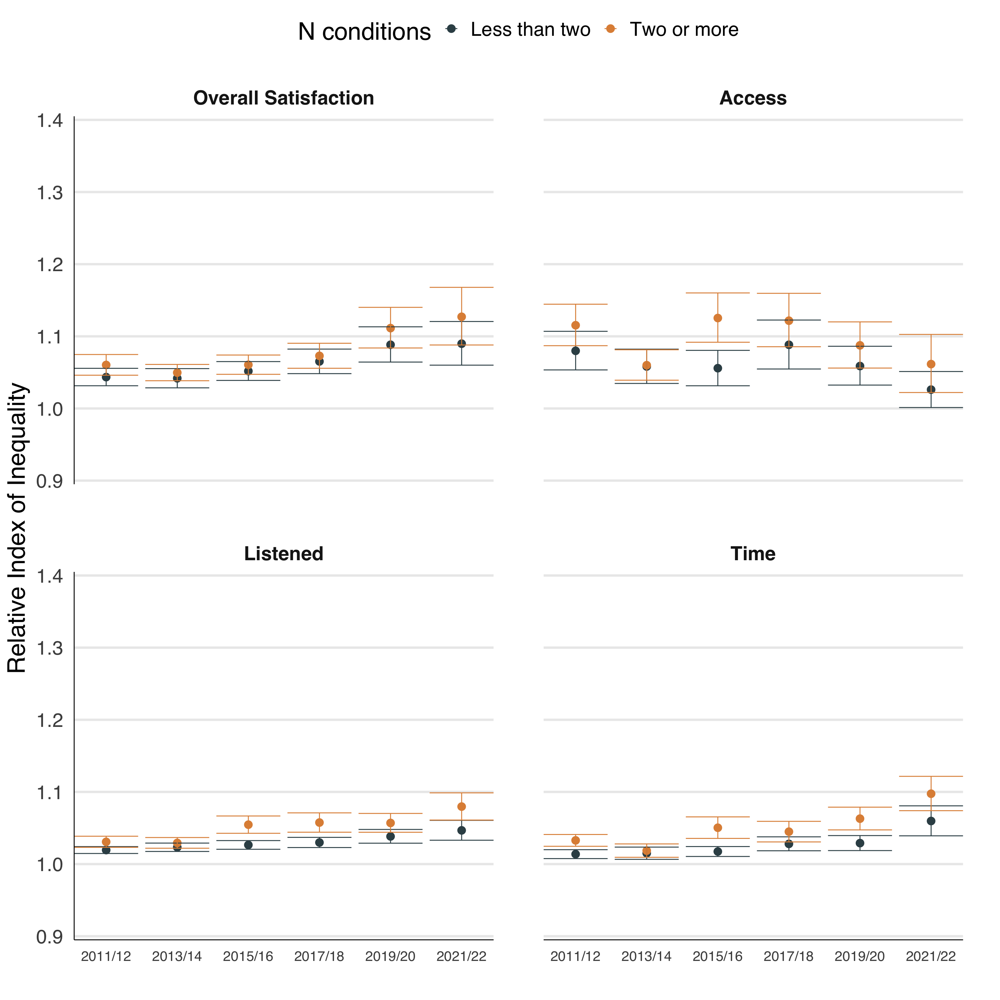

[1] "/Users/dhender6/Library/CloudStorage/OneDrive-UniversityofEdinburgh/github/scotch_hace"ScotCH HACE analysis
Introduction
HACE results
Table 1
Overall characteristics of respondents by year (labels need tidied up)
Figure 1
Quick look at overall scores for percentage of positive responses (with missing data removed), for the four questions analysed:
- Overall, how would you rate the care provided by your GP surgery/practice? (Overall Satisfaction)
- Overall, how would you rate getting to see a doctor in your GP surgery? (Access)
- Thinking of the last time you saw a doctor at your GP surgery how much would you agree or disagree with the following?
- The doctor listens/listened to me (Listened)
- I was given enough time (Time)
Figure 2
Overall scores split by most and least deprived respondents (might be a better figure 1 for the paper)
Figure 3
Relative index of inequality for each of the four questions.
Shows the relative difference between most and least deprived deciles, will give more details in methods section but, for example, RII of 1.05 (rough overall score in 2011/12) suggests predicted % for most deprived is 5% lower than for the least deprived. RII of 1.12 (rough overall score in 2021/22) suggest predicted % for most deprived is 12% lower than for least deprived. So if % positive rate was 90 for least deprived we would predict score of 85% for most deprived in 2011/12 but 78% in 2021/22.
Main takeaway is that, apart from the access question, the relative difference in positive responses has widened over time i.e. inequality in satisfaction is getting worse.
Figure 4
Same as above but stratified by age group. Gets a bit messy here, might be better as a table but likely to be in supplementary file anyhow.
This shows the relative difference between most and least deprived deciles by age group.
There are differences between least and most deprived between and within age groups.
Figure 5
And the same for conditions

Figure 6
Age * Sex
Figure 7
Overall Satisfaction question only!
Age * Sex * MM
Numbers start to get very small here, difficult to argue these results are robust, but does show the pattern that the gap in satisfaction between most and least deprived is widest for young, multimorbid people